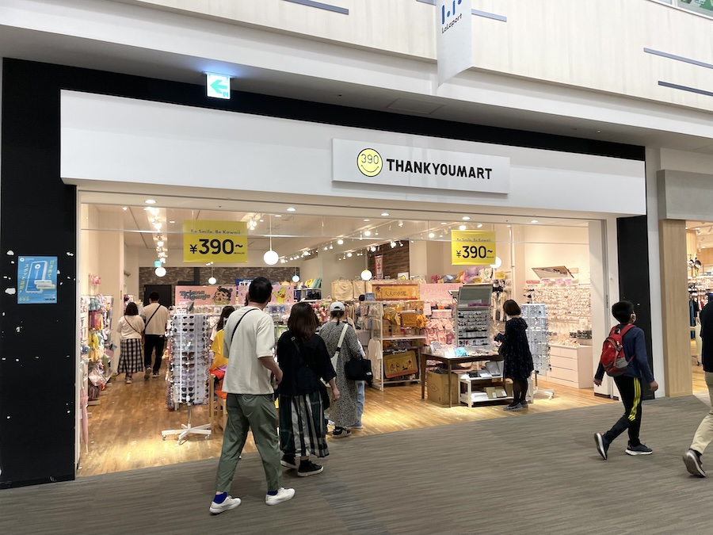
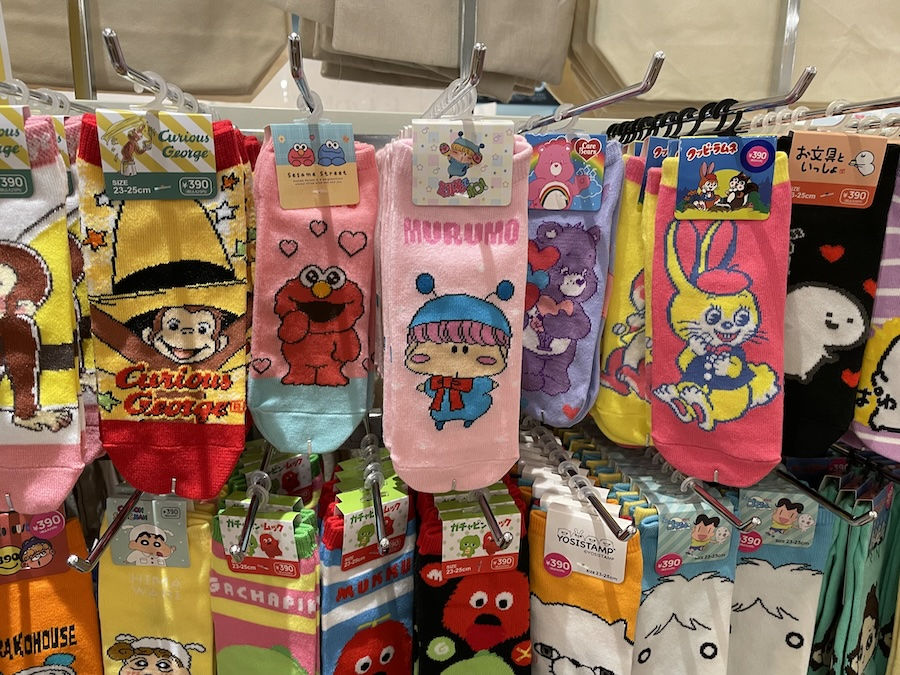
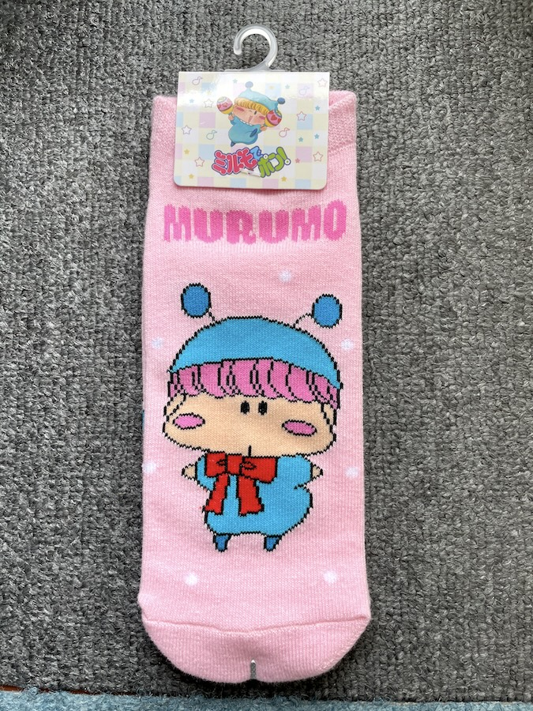
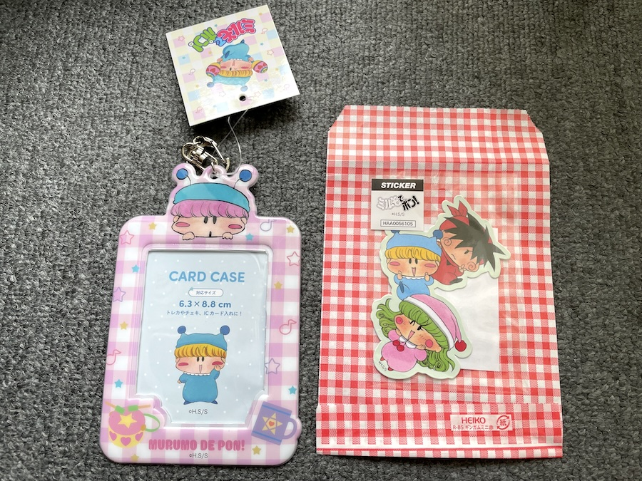
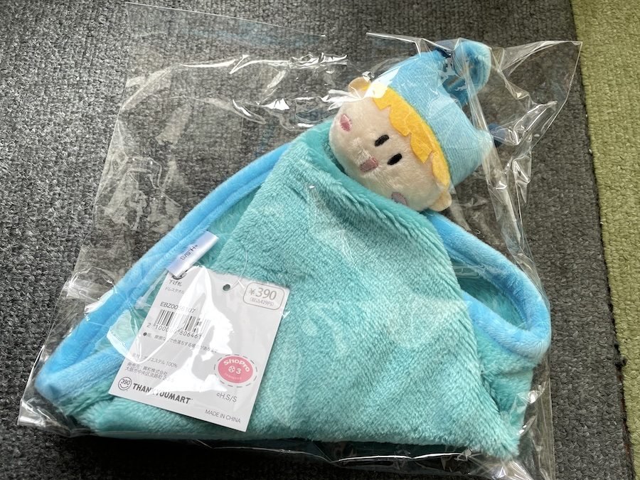
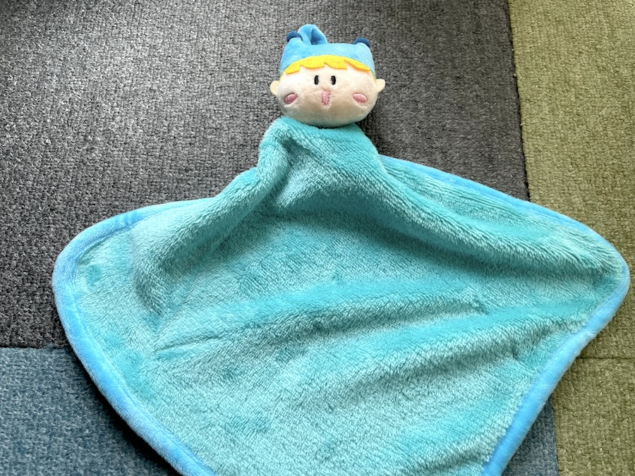
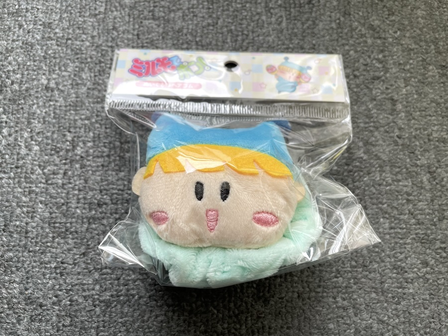
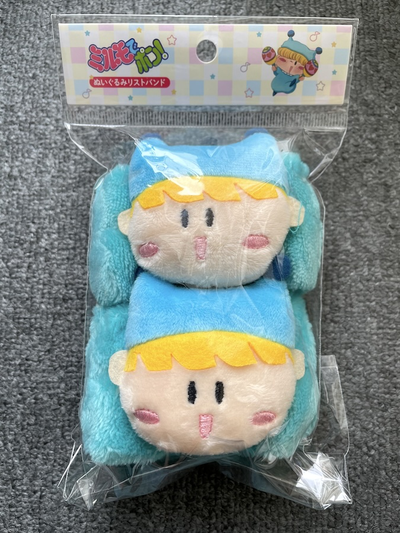
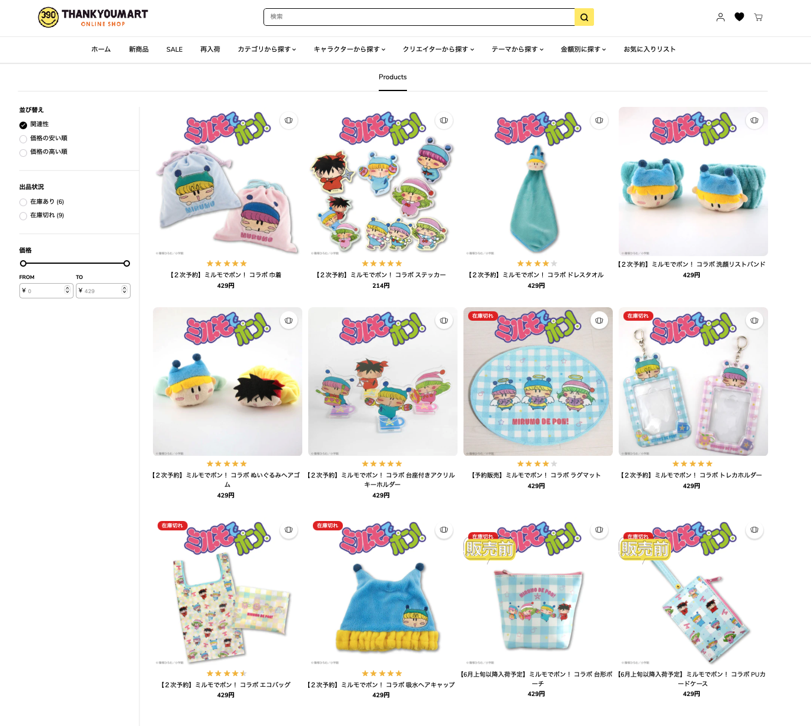

４月２６日から販売開始されたサンキューマートのミルモコラボ雑貨ですが、なんと途中からグッズが追加販売されていました！
ミルモグッズがあまりに好調なので、急遽の追加販売！？
（実際のところは、商品化までに結構時間がかかることを考えるとだいぶ前から決まっていたはず^^;）
今回はその新作グッズと、サンキューマートのオンラインショップで追加購入したグッズを紹介いたします！

新作グッズを求めて、ららぽーと立川立飛のサンキューマートへ行ってきました〜

これですこれです！
新作グッズその１のムルモの靴下。
なぜミルモではなくムルモなのかが超絶謎ですね。
画像右下には少年アシベのゴマちゃん‥ではなくイエティの靴下もあり、あえて主役を選ばないポリシー！？(^◇^;)

新作グッズその２はコンパクトミラー
カバンに入れてもかさばらなくて実用性がありそうです。

改めてムルモの靴下です。
「ほぇ？」と言っていそうな表情がかわいい！
それでいてMURUMOと名前アピールしているあざといムルモさん。。

デザインは左右で異なるところがポイント高いですよね。

コンパクトミラーです。
主役４妖精が仲良くポーズを決めていて微笑ましいです〜。
ここからはサンキューマートのオンラインショップで追加購入したグッズたちを紹介します。

ムルモのカードケースとステッカーです。
ステッカーは写真に写っているギンガムチェックの袋に入っておりました。
ステッカーの方にはムルモがいなかったりします(^◇^;)

ミルモのドレスタオルです。

こんなふうに、ミルモの顔の下にタオルがぶら下がります。
洗濯するとミルモの顔がどうなってしまうのかちょっと気になるところです(^^;

ミルモのヘアゴムです。

ミルモの洗顔リストバンドです。
ミルモは濡れても平気なのかな・・？

最後に、６月６日時点のオンラインショップの状況です。
エコバッグとヘアキャップが在庫切れですが、他の商品は在庫があるようです。
それと、台形ポーチとPUカードケースが間も無く販売されるようで、こちらはゲットしたらまたレポートしたいと思います。
（買い逃しているヘアキャップもゲットしてレポートしたい・・）
(2024/6/6)